<!doctype html>
<html>
<head>
    <meta http-equiv="content-type" content="text/html; charset=UTF-8">
    <title>p_slides</title>
    <link rel="stylesheet" type="text/css" media="screen, projection, print" href="slidy.css" />
    <link rel="stylesheet" type="text/css" media="screen" href="style.css" />
    <link rel="stylesheet" type="text/css" media="screen, print" href="twitter_bootstrap.css" />
    <script src="showdown.js"></script>
    <script src="slidy.js"></script>
    <script src="jquery-syntax/jquery-1.4.4.min.js"></script>
    <script src="jquery-syntax/jquery.syntax.min.js"></script>
</head>
<body>

<div class="footer">Vorlesung C++, UML und Design Patterns</div>

<script type="p_slides" class="presentation">

* Dozent: Tomáš Pospíšek &lt;xpos at zhaw.ch&gt;
* work in progress → bin für Anregungen immer dankbar!
* basierend auf dem Buch „C++, UML und Design Patterns“ von Helmut Herold,
  Michael Klar und Susanne Klar
    * Skript referenziert jeweils Seitenzahl im Buch
    * "siehe Code" bedeutet siehe Code im Buch
* Präsentation via Alain Lafons [p_slides](https://github.com/preek/p_slides)

---

* Inline-Funktionen (S.33)
    * Macros problematisch
    * inline syntaktisch sauberer
    * inline ist nur Hinweis für den Compiler
    * keine Rekursion, keine Funktionspointer

---

* Deklarationen im Anweisungsteil und der Scope-Operator (S.36)
    * Variablen-Deklarationen in C am Block Anfang
        * bitte nun selbst auf schönen Code achten!

    * Variablen-Deklarationen in einer `for`-Schleife

---

* Der Scope-Operator `::` (S.38)
    * Zugriff auf verdeckte globale Variablen

---

* Default Parameter bei Funktionen (S.39)
    * kann eingesetzt werden für modifizierbares "Standard Verhalten" von Funktionen
    * Default Parameter am Ende der Parameterliste
    * Default Parameter müssen im Prototyp deklariert sein, wenn Prototyp vorhanden
    * keine Defaults bei Varargs

---

* Überladen von Funktionen (function overloading) (S.43)
    * allgemeiner: "Multimethods"
    * vom Compiler via "Name Mangling" umgesetzt
    * wenn Compiler nicht eindeutig entscheiden kann, welche Funktion er nehmen soll:
         * wegen auto cast
         * oder default Parametern
         * → Fehler
    * Rückgabetyp zählt nicht zur Signatur einer Funktion
    * `const` wird in Signatur berücksichtigt
    * `0` wird per default als `int` interpretiert
        * Beispiel: Funktion welche entweder `char *` oder `int` entgegenimmt

---

* Zugriff auf Daten über Referenzen in C++ (S.47)
    * Referenz == Alias auf Variable

            int zahl;
            int& ref = zahl;

    * muss bei Deklaration initialisiert werden
    * casts möglich

            double realo;
            int& refr = (int&)realo;

---

* Echtes Call-by-Reference bei Funktionen (S.49)
    * siehe Code

---

* Konstante Referenzparameter bei Wertübergabe an Funktionen (S.51)
    * Schnellere Programme durch Übergabe von Referenzen
    * const verwenden um zu deklarieren, dass Parameter nicht verändert werden
    * siehe Code 
    * Temporäre Objekte sind immer `const`
        * siehe Code 

---

* Rückgabe von Referenzen durch Funktionen (S.52)
    * können auf der linken Seite von Zuweisungen stehen
    * Achtung: nicht lokale Variablen zurückgeben!
    * siehe Code

---

* Speicherallozierung mit Referenzen (S.56)
    * siehe Code

---

* Der Operator new (S.57)
    * siehe Code
    * Speicher wird mit 0 initialisiert
    * gibt korrekten Typ zurück - kein Cast notwendig

* Allozieren von Arrays
    * siehe Verwendung von `const` (S.58)
    * Konstant ist, was <b>vor</b> const steht
    * `int* const array = new int[10];`

---

* Der Operator delete (S.59)
    * `delete []array;`
    * new → delete
    * new[] → delete[]
    * Achtung: keine typedefs für Arrays in C++
        * siehe Code mit Fehler (S.60)

---

* Mischen von C mit C++ und Namensräume (S.61)
    * ein C++ Compiler definiert die Konstante `__cplusplus`
    * C++ und C geben kompilierten Funktionen andere Namen
    * deshalb C Funktionen deklarieren mit:
  
             extern "C" int func(int p1, int p2);
             extern "C" { int func2(int p1); }

    * siehe üblen Hack für C/C++ kompatible Header (S.64)

---

* Neue Headerdateien für C-Standardfunktionen (S.64)
    * nicht mehr "alte" C Header verwenden, sondern C++ Header:

            #include <string.h&>

        wird zu 

            #include <cstring>

---

* Namensräume (namespaces) in C++ (S.65)
    * ohne Namensraum → Kollisionen
    * default Such-Namensraum festlegen:

            using namespace namensraum;

    * alle Standard C++-Bibliotheken in `std`:

            using namespace std;

    * expliziter Namensraum:

            namensraum::funktion

---

* Der Datentyp `string`(S.67)

        #include <string>

    * wächst automatisch
    * nicht 0-terminiert

---

* Initialisierung (S.68)

        string s1 = "zeichenkette"; // 1. Möglichkeit
        string s2("zeichenkette");  // 2. Möglichkeit

* Zuweisung

        s1 = "andere Zeichenkette";
        s2 = s1;

* Zusammenfügen mit `+`

        s1 = s2 + "Zeichenkette" + s3;

---

* Anhängen mit `+=`

        s1 += s2 + "Zeichenkette" + s3;

* Löschen von Zeichen mit `erase()`

        s1.erase(5); // löscht alle Zeichen ab Pos. 5 (Zählung beginnt bei 0)

* Umwandeln in C-String mit `c_str()`

        printf("%s", s1.c_str());

---

* Der Datentyp `vector`

        #include <vector>
        vector<T> name(elemZahl);

z.B.

        vector<int> zahlen(20);

---

* Zugriff auf Elemente mit `[]`

        for (unsigned i=0; i < 20; i++)
          zahlen[i] = i;

* Anhängen neuer Elemente und Verlängern mit `push_back()`

        for (unsigned i=0; i < 10; i++)
          zahlen.push_back(i*i);

* aktuelle Anzahl Elemente mit `size()`

        for (unsigned i=0; i < zahlen.size(); i++)
          printf("%d\n", zahlen[i]);

* siehe Code (S.70)

---

* Neue Ein- und Ausgabebibliothek (S.71)
    * "Streams"

            #include <iostream>   // <iostream> Headerdatei einfügen
            
            using namespace std;  // Namensraum std
            
            int main(void) {
              double d = 10.0;
              int i = 10;
            
              cout << i << endl << d << endl; // endl bewirkt einen Zeilenvorschub
            
              cout << "Bitte erste Zahl eingeben:" << endl;
              cin  >> i;
              cout << "Bitte zweite Zahl eingeben:" << endl;
              cin  >> d;
              cout << "Die beiden eingegebenen Zahlen waren:" << endl;
              cout << i << ", " << d << endl;
            }

    * cout, cin, cerr

---

* Neue Ein- und Ausgabebibliothek (S.73)

        bool t = true, f = false;
        cout << "true=" << t << ", false=" << f << ", (a<0)=" << (a < 0);

  ergibt:

        true=1, false=0, (a<0)=1

    * Reihenfolge der Ausgabe ist definiert. Reihenfolge der Berechnung der einzelnen
      Ausdrücke jedoch **nicht**!
    * → Achtung Seiteneffekte!*

---

* Standardausgabestream cout (S.74)
    * Manipulatoren
         * special Effect für nächsten Ausdruck, oder bis zur nächsten Änderung
         * `setw(breite)`
             * nächsten Ausdruck in einem `breite` breiten Feld rechtsbündig anordnen
         * `hex`, `dec`, `oct`
             * alle folgenden Zahlen sollen im entsprechenden Format ausgegeben werden
    * siehe Tabellen und Code S.75

---

* Standardeingabestream cin (S.77)
    * ignoriert Leer- und Tabulator Zeichen und "versteht" Backspace
        * dies gilt auch für `char`
    * Zeichen werden so lange konvertiert, bis ein Fehler oder Ende kommt
         * "123cm" → 123
         * Achtung, nichtverarbeitete Zeichen bleiben im Puffer, insbesondere z.B. '\n'
             * siehe Code S.78 und S.79
             * achte auf das bekanntmachen von Methoden im eigenen Kontext
    * `ignore()` kann Zeichen ignorieren

             cin.ignore(5);        // nächste 5 Zeichen ignorieren
             cin.ignore(20,'\n');  // nächste 20 Zeichen oder bis zum Newline ignorieren

---

* Standardeingabestream cin
    * sollen Leerzeichen behalten werden:

            char z;
            cin.get(z); // liest ein einzelnes Zeichen, auch Leerzeichen ein

    * Strings mit Leerzeichen auch mit `get` einlesen:

            char str[100];
            cin.get(str, 99); 

    * `\n` bleibt im Eingabepuffer! → `ignore`
      verwenden oder ...
    * `getline()` für Zeileneingaben verwenden
      * liest auch `\n` ein, ersetzt diesen jedoch mit einem `\0`
  
    * die I/O Operatoren und Methoden funktionieren auch mit Instanzen von `string`

---

* Einfaches Lesen und Schreiben in Dateien (S.81)

        #include <fstream>
        
        ifstream leseName    (dateiName1); // input  file stream
        ofstream schreibName (dateiName2); // output file stream
        
        string zeile;
        ...
        getline(leseName, zeile);

    * siehe Programme ab S.82-84

---

* Neue Casting-Konstrukte (S.85)
    * old-style casts

            (typ)ausdruck    // wie in C auch in C++ mögl.
            typ(ausdruck)    // nur in C++ mögl.


    * new-style casts
        * `static_cast`macht casting explizit. Generiert möglicherweise
          Code für Umwandlung.

            static_cast<typ>(ausdruck)  // wenn zu castende Typen zu compile time bekannt sind

     * siehe Code S.86

---

* Neue Casting-Konstrukte (S.87)
    * `const_cast` - `const` Typ in nicht-const Typ umwandeln
        * siehe Code S.87

    * `reinterpret_cast` - Umwandeln in völlig anderen Datentyp. Kein Code
      wird generiert.
        * siehe Code S.87-88

    * `dynamic_cast` - Umwandlung zu Laufzeit - wird später behandelt

    * siehe auch [coppro auf Stackoverflow](http://stackoverflow.com/questions/332030/when-should-static-cast-dynamic-cast-and-reinterpret-cast-be-used#332086)

---

* Strukturen, Klassen und Objekte in C++ (S.99)
* Funktionen in Strukturen – Erster Schritt zur Objektorientierung (S.101)

        struct foo_t {
          int member;
          ...
        }
        
        struct foo_t foo;   // C-style
        foo_t        foo2;  // C++-style
        
        foo_t*       foo_p = &foo;
        
        foo.member   = 1;
        foo_p->member = 7;

    * Problem: kein Schutz von "internen" und "öffentlichen" Strukturelementen

---

*   Strukturen in C++ (S.104)
    *   Memberfunktionen (Methoden) in Strukturen

            void memberfunktion3() { return 22; } // inline Funktion
            
            struct Foo {
              int bar;
              ...
              void memberfunktion1();
              void memberfunktion2();
              void memberfunktion3() { return 22; } // inline Funktion
              void memberfunktion4();
            }
            
            void Foo::memberfunktion1() {
              ...
              bar = 42;
              this->bar = 7;
            
              memberfunktion2();
              Foo::memberfunktion2();
            }
            
            inline void Foo::memberfunktion4() { ... }

---

* Schlüsselwort this – Zeiger auf Strukturobjekt selbst (S.108)
    * Zeiger auf Struktur-/Klasseninstanz in der man sich befindet
    * Rückgabe der Instanz aus einer Memberfunktion

---

* Schutztypen für Membervariablen und -funktionen (S.110)
    * public, private, protected
    * bei Vererbung: Subklassen dürfen auf protected Elemente zugreifen

            struct Foo {
              public:
                int x;
                void p();
              private:
                ...
            }

---

* Konstruktoren zum Initialisieren von Strukturen (S.116)
    * Initialisierung von privaten Struktur-Member-Variablen
    * Konstruktoren haben Namen der Struktur
        * können nur *implizit* aufgerufen werden
        * kein Rückgabetyp in der Deklaration
        * siehe Code S.119ff

                struct Foo {
                  public:
                    Foo(int param1); // Konstruktor
                }
                
                // Deklaration von Variablen von Typ "Foo" mit Initialisierungsparametern
                Foo foo(11);
                Foo moo = Foo(99);
                Foo hoo = 100;

---

* Voreingestellter Standardkonstruktor (ohne Parameter) (S.122)
    * wenn es keinen Konstruktor gibt, erstellt der Compiler selbst einen default
      Standardkonstruktor
    * sobald der Programmierer ein Konstruktor bereitgestellt wird, wird derjenige
      des Compilers weggelassen
    * Aufruf des Standardkonstruktors *ohne* Klammern

            struct Foo f1();          // nicht OK
            struct Foo f1;            // OK
            struct Foo f1(1, 2, 3 );  // OK

---

* Konstruktoren und Arrays (S.124)
    * bei Arrays Angabe von Initialisierungs-Parametern nicht möglich
    * Lösungsansätze:
        * separate Initialisierungsfunktion aufrufen nach Deklaration
        * Initialisierungsliste zuweisen - siehe Code S.128 und S.129
        * Zeigerarrays verwenden und dann Instanzen per new erstellen

                bit bitArray1[8] = { bit(1), bit(2), bit(4), bit(8), bit(16), bit(32), bit(64), bit(128) };
                // oder
                bit bitArray1[]  = { bit(1), bit(2), bit(4), bit(8), bit(16), bit(32), bit(64), bit(128) };
                // oder
                bit bitArray2[]  = { 1, 2, 4, 8, 16, 32, 64, 128 };
                // oder
                bit *bitZgrArray[bitZahl]; //... Array von bit-Zeigern

    * bei zu wenigen Konstruktoren wird der Standardkonstruktor genommen, wenn vorhanden

---

* Referenz auf sich selbst zurückgeben

        struct Foo {
          Foo& gib_objekt() { return *this; }
        }

---

* Destruktoren zum Löschen von Strukturvariablen (S.131)
    * werden beim Entfernen einer Variable bzw. bei der Freigabe ihres Speicherplatzes aufgerufen
    * haben Namen der Struktur mit vorangestelltem Tilde '~'

            struct Foo {
              ~Foo(); // Destruktor
            }

    * weder Parameter noch Rückgabewert
    * können explizit, via `delete` aufgerufen werden
    * automatische Destruktion erfolgt in umgekehrter Reihenfolge der Konstruktion
    * siehe Code S.131

---

* Aufrufzeitpunkte von Destruktoren (S.132)
    * globale und statische (lokale) Objekte werden beim Verlassen des Programms "zerstört"
    * dynamisch erzeugte Objekte bei `delete` Aufruf
    * lokale Objekte beim Verlassen des Blocks
    * temporäre, sobald nicht mehr benötigt

---

* delete und der der 0-Zeiger
    * doppeltes `delete` → Absturz
    * `delete(0)` ist eine NOP
        * → Objekt-Pointer jeweils auf Null setzen
    * siehe Code S.134

---

* `delete` und `delete[]` (S.135)
    * bei `delete []` wird Destruktor für jedes Element des Arrays aufgerufen

---

* Destruktoraufrufe für Zeiger auf höheren Ebenen (S.136)
    * C++ macht rekursiven Aufrufe von Destruktoren
    * Pointer werden aber *nicht* traversiert
        * siehe Code S.136
    * Lösungsansätze
        * "Benutzer" gibt Strukturen explizit frei
            * siehe Code S.137 oben
        * Datenstrukturen werden so verpackt, dass Freigabe automatisch passiert
            * siehe Code S.137 unten
            * siehe Code S.137
    * **Vorsicht, `delete (void*)...` ist eine NOP** !!!

---

* UML – Die Beschreibungssprache für objektorientierte Systeme (S.160)
    * OO seit 70er Jahren
        * Simula-67
        * Smalltalk
    * OOAnalyse (was ist zu tun?) und OODesign  (was ist es zu tun?) seit 80ern
    * UML Notation entstand 1994 aus vorherigen Ansätzen

---

* Klassen- und Objekt-Darstellung in UML (S.161)

    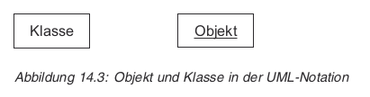
    
    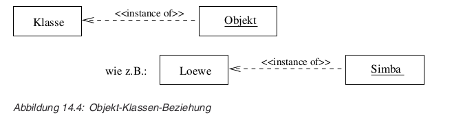

---

* Klassen- und Objekt-Darstellung in UML (S.162)
    * Zusammenfügen von Daten und Funktionen
    * Datenkapselung und Zugriffsschutz
    * Wiederverwendung vorhandener Software
  
---

* Das Schlüsselwork class (S.168)
    * struct: alles per default public 
    * class:  alles per default private
        * Verhalten von Objekten nach aussen steht im Vordergrund
    * Einsatz von Klassen
        * Objekte mit gleichem Verhalten allgemeingültig beschreiben
        * komplexen Sachverhalte kapseln
    * Die Schutztypen public, private und protected
        * best practice: public zuerst

---

* Der :: Scope Operator (S.172)
    * regelt ob auf lokale, globale oder auf Membervariablen zugegriffen wird

---

* Konstruktoren (S.172)
    * Aufrufzeitpunkte von Konstruktoren (S.173)
        * globale Objekte: bei Programmstart
        * dynamische Objekte: bei Ausführung von `new`
        * lokale Objekte: bei erreichen der entsprechenden Deklaration
        * temporäre Objekte: bei der im/expliziten Erzeugung

---

* Header und cpp Datei (S.172)
    * Deklaration/Interface in `.h`
    * Implementation in `.cpp`
        * bindet das eigene `.h` ein, um Konsistenz zu gewährleisten
    * siehe Code S.176

---

* Namenskonventionen für Klassen (S.177)
    * siehe S.177
    * Diskussion

---

* Klassen und Objekte in UML (S.184)
    * ein Stack soll implementiert werden
        * einfache Implementierung mittels eines Arrays
        * beim Anlegen mit der maximale Grösse `m\_Max` parametrisiert
        * oberster Wert: `m\_Top`

        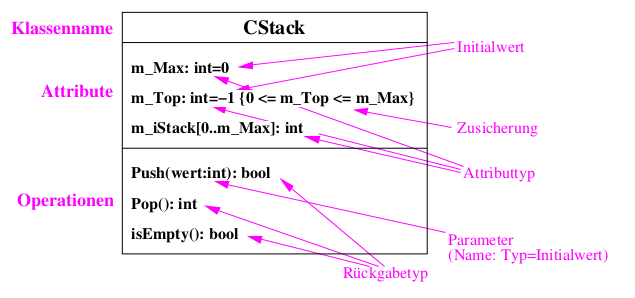

---

* Klassen und Objekte in UML ff
    * Zugriffsrechte festlegen:
        * \+ public
        * \- private
        * # protected

        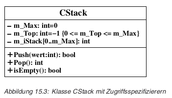

    * welche Details will man im UML Diagram darstellen?

---

* Beziehungen zwischen Objekten und Klassen in UML (S.186)
    
    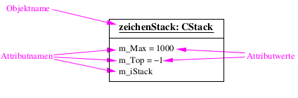

    * Implementierung siehe S.188

---

* Verhalten, Identität und Status eines Objekts (S.189)
    * ein Objekt hat
      * Verhalten → wird durch Klasse festegelegt
      * Identität

            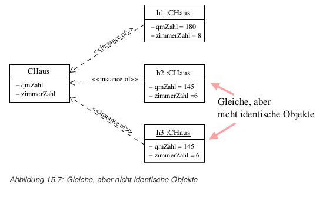

      * Zustand

    * gestrichelter Pfeil ist eine "Erweiterung" vom UML (ein "Stereotyp")

---

* UML-Diagramme für Objektzustände (S.190)

    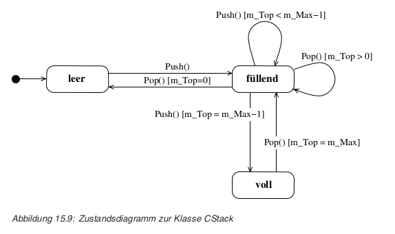

---

* Kopieren und Zuweisen von Objekten (S.194)
    * In folgenden Fällen werden die Attributwerte eines Objekts in ein anderes Objekt
      derselben Klasse kopiert:
        * Initialisieren eines Objekts mit einem anderen Objekt derselben Klasse
        * Zuweisung, wenn nicht anders implementiert
        * Übergabe eines Objekts als Argument bei einem Funktionsaufruf
        * Rückgabe eines Objekts als Funktionswert
    * es wird eine __flache__ Kopie gemacht
    * dabei wird der Standardkonstruktor **nicht** verwendet
    * wenn implementiert, wird der Kopierkonstruktor verwendet

            Klasse(const Klasse &zuKopierendesObjekt)

---

* Der Kopierkonstruktor (S.195)
    * wird (anstatt des Standardkonstruktors) aufgerufen, wenn
        * Objekt mit anderem Objekt der gleichen Klasse initialisiert wird
        * wenn bei Aufruf einer call-by-value Funktion ein Objekt übergeben wird
        * wenn Objekt als Rückgabewert zurückgeliefert wird
        * dieses temporäre Objekt wird nach der Zuweisung wieder zerstört!
    * siehe Code S.195-199

---

* Der Zuweisungsoperator (S.199)
    * wird bei Zuweisungen ausgeführt
    * ansonsten: Flache Kopie
    * Referenz auf `this` muss explizit zurückgegeben werden
    * siehe S.199

            Klasse& operator=(const Klasse &zuzuweisendesObjekt)

---

* Zuweisungsoperator vs. Kopierkonstruktor
    * Kopierkonstruktur nur einmal bei Initialisierung aufgerufen
    * Zuweisungskonstruktor beliebig
    * da beide ähnlich, kann man im Zuweisungsoperator den Kopierkonstruktor aufrufen
        * siehe Code S.200 Mitte und unten und S.204 für alternative Implementation

---

* Notwendigkeit eigener Konstruktoren und Zuweisungsoperatoren (S.201)
    * bei Definition einer Klasse sollten folgenden Methoden Beachtung geschenkt werden
        * Standardkonstruktor
        * Destruktor
        * Standard-Kopierkonstruktor
        * Standard-Zuweisungsoperator
    * Faustregel: wenn Standard-Kopierkonstruktor überladen wird,
      dann auch Standard-Zuweisungsoperator und umgekehrt

---

* Speicherzugriffsfehler in Destruktoren bei flachen Kopien (S.202)
    * siehe Code S.202

* Kein Aufruf des Kopierkonstruktors bei anonymen Objekten (S.203)
    * siehe Code S.203

---

* Alternativer Kopierkonstruktor und Zuweisungsoperator (S.204)
    * Eliminierung von dupliziertem Code
    * siehe Code S.204

---

* Klassen, die Objekte als Membervariablen besitzen (S.205)
    * wenn Klassen Attribute besitzen, welche Pointer sind,
      so müssen sehr wahrscheinlich Kopierkonstruktor und
      Zuweisungsoperator überladen werden.
    * wenn die Attribute keine Pointer sind, so werden für
      die entsprechenden Member-Objekte ihre Zuweisungsoperatoren
      aufgerufen
        * siehe Code S.205

---

* Konstante Memberfunktionen und Objekte (S.209)
    * Konstante Memberfunktionen
        * `const` muss sowohl bei Deklaration als auch
          bei Definition angegeben werden

                class Klasse {
                  ...
                  void get() const;

        * ohne `const` ist `this` in einer
          Methode ein konstanter Zeiger. D.h. er kann in der
          Methode nicht verändert werden:

                Klasse *const this;

        * mit `const` ist `this`
          ein konstanter Zeiger auf _ein konstantes Objekt_. D.h.
          auch die Instanz auf die er zeigt, kann nicht verändert
          werden.

                const Klasse *const this;

          bzw.

                Klasse const *const this;

          Damit deklariert man also eine pure Funktion.

---

* Konstante Objekte (S.210)
    * siehe Code ebenda

* Regeln für konstante Memberfunktionen und Objekte
    * `const` nur für **Member**funktionen 
    * sagt Compiler, dass er keine Operationen, welche Instanz
      ändern zulassen soll
    * in `const` Memberfunktionen dürfen nur
      `const` Memberfunktionen aufgerufen werden
    * `const` ist ein Teil der Signatur, d.h.
      `const` und nicht-`const` Versionen möglich
    * in `const` Objekten können nur `const`
      Methoden aufgerufen werden
    * siehe Code S.211

* Gleiches Objekt als konstantes und nicht-konstantes (S.982)
    * siehe Code ebenda

    * siehe auch Code S.212

---

* Statisch Klassenelemente und Objekte (S.216)
    * Klassenbezogene Memberfunktionen und -variablen
        * `static` für Attribute und oder Methoden verwenden
    * Klassenattribute **müssen ausserhalb der Klasse instanziert werden !**

            class Foo {
              private:
                static int x;
              ...
            };

            int Foo:x = 0; // nur bei Definition erlaubt
                           // -> nicht im Header machen -> include Fehler!

    * Initialisierung von konstanten Klassenattributen siehe S.222

---

* Zugriff auf Klassenattribute

        Foo::x = 3;

    * siehe auch S.218 für alternative Zugriffsmethode

* Klassenattribute sind im UML unterstrichen

    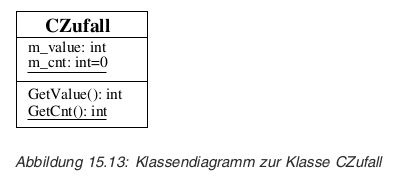

* Klassenmethoden
    * haben nur Zugriff auf Klassenattribute
    * können nicht inline sein
    * dürfen nicht `const` deklariert werden

---

* Kein Zugriffsschutz bei Objekten, die gleicher Klasse angehören (S.227)
    * Objekte der gleichen Klasse haben Zugriff auf Ihre private Elemente
        * siehe Code S.227

---

* Mehrere Klassen bzw. Objekte im Zusammenspiel (S.229)
    * Aufteilung in Klassen: jedes Substantiv in der Aufgabenstellung → Klasse

      * _"Es ist ein Programm zu erstellen, bei dem das Warten von
          Personen in einer Warteschlange simuliert wird. Ist die
          Person, die über einen Namen identifiziert wird, an der
          Reihe, so trägt sie ihr Anliegen vor."_

    * u.U. aber auch z.B. technische Klassen, welche nicht
      in der Aufgabenstellung vorkommen

    * Klassen von OOA nicht zwingend gleich jenen von OOD

---

* Eine Klasse - eine Aufgabe (S.231)
    * klar umrissene, überschaubare Aufgabe
    * Aufgabe so wählen, dass
        * Komplexität sinkt
        * Wiederverwendbarkeit steigt

---

* UML-Klassendiagramme mit mehr als einer Klasse (S.231)

    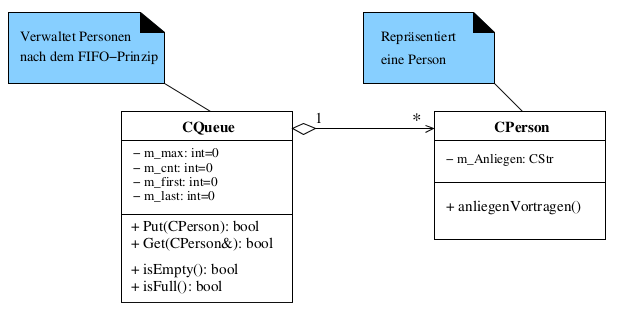

    * Assoziation zwischen CPerson und CQueue
    * Aggregation von CPerson'en innerhalb von CQueue: CPerson ist ein Teil von CQueue

---

* Interaktionsdiagramme (dynamisches Design) (S.232)
    * auch Sequenz- bzw. Kollaborationsdiagramme

        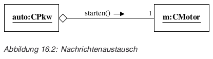

    * gibt jeweils ein Szenario wieder, zeigt Botschaften und Objekte,
      welche ausgetauscht werden

    * Sequenzdiagramm hebt zeitliche Abfolge hervor
    * Kollaborationsdiagramm hebt Beziehungen zwischen Objekten hervor
        * zeitliche Abfolge ist durchnummeriert

    * Kollaborations- bzw. Sequenzdiagramme beschreiben üblicherweise
      nicht präzise und vollständig das Verhalten. Dafür sind
      Zustandsdiagramme da.

    * d.h. sie sind für Analyse und Dokumentation da. So wie bei
      Klassendiagrammen ein Kästchen einer Klasse entsprechen wird, so  
      werden bei Sequenzdiagrammen Pfeile Methoden entsprechen.

---

* Sequenzdiagramm (S.234)

    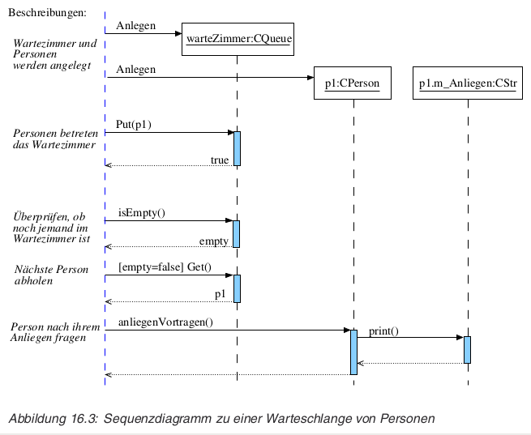

    * siehe auch [IBM developerWorks: UML basics: The sequence diagram](http://www.ibm.com/developerworks/rational/library/3101.html)

---

* Kollaborationsdiagramm (S.234)

    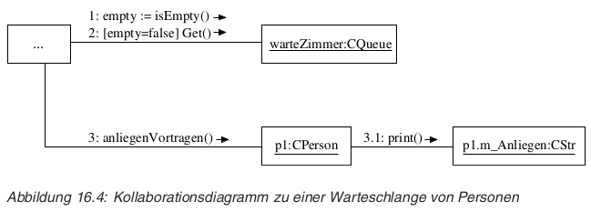

    * siehe aus den Diagrammen entstandenen Code S.235

---

* Initialisierung von Membervariablen (S.247)
    * Problem siehe Code S.248
        * sobald `CZaehler` Variable instanziert wird
          gibt's Compiler Fehler, da es keinen Konstruktur von
          `CSiebSeg` ohne Parameter gibt.

    * mögliche Lösung S.249
        * zuerst wird default `CSiebSeg` Konstruktor
          aufgerufen, dann werden neue `CSiebSeg`
          Instanzen neu erstellt

    * alternative Lösung S.249 unten

---

* Initialisierung von Membervariablen ff
    * wenn nicht inlined, gehören Initialisierungslisten in die Implementation
      und nicht in die Interface-Definition
        * siehe Code S.251 unten
    
    * Initialisierungsliste kann aus Ausdrücke enthalten
        * siehe Code S.252 oben
    
---

* Initialisierung von Membervariablen ff
    * Initialisierungsliste erfolgt in der Reihenfolge der
      __Variablendeklarationen__ und __nicht__ der Reihenfolge
      der Ausdrücke in der Initialisierungsliste
        * siehe Code S.252 unten und S.253 oben
        * Grund ist, dass Destruktoren in umgekehrter Reihenfolge
          aufgerufen werden - der Compiler müsste sich also merken,
          wie das Objekt konstruiert wurde.

    * wenn nichts angegeben wird, wird default Konstruktor aufgerufen

    * Initialisieren von Arrays mit Werten verschieden von 0
        * siehe Code S.255 unten

---

* Initialisierung von Memberkonstanten (S.259)
    * ebenfalls via Initialisierungsliste - siehe Code S.259 unten

* Initialisierung von Referenz-Membervariablen (S.262)
    * dito - siehe Code S.262

---

* Assoziationen, Aggregationen und Kompositionen (S.267)
    * Assoziation – gleichrangige Beziehung zwischen Objekten
    * Aggregation – Hierarchische Beziehung (Objekte sind Teile eines anderen)
    * Komposition – Teile sind vom ganzen existenzabhängig

    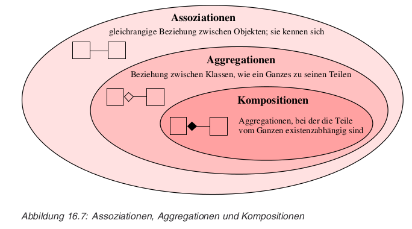

---

* UML-Darstellung
    * Assoziation (Benutzt-Beziehung)

        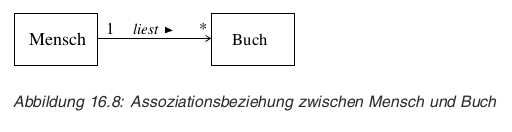

---

* Assoziation (Benutzt-Beziehung) ff

    * es kann auch angegeben werden welche Rolle ein
      Objekt in einer Beziehung spielt:

        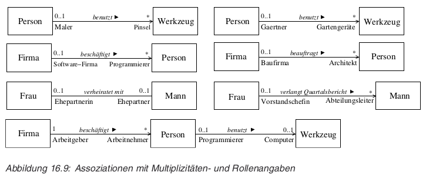

---

* Assoziation (Benutzt-Beziehung) ff
    * Sichtbarkeit der Objekte nach aussen, kann via - und + angegeben werden

        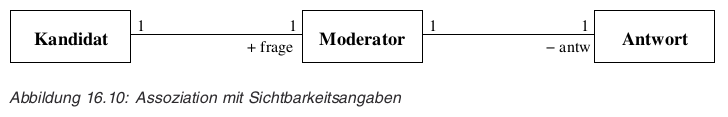

---

* Assoziation (Benutzt-Beziehung) ff
    * UML kann nicht zwischen ungerichteten und bidirektionalen Assoziationen
      unterscheiden

        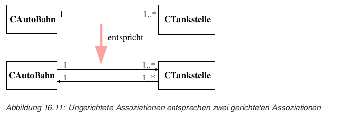

---
* Links (Objektverbindungen) (S.271)
    * siehe Bilder S.271 und S.272

---

* Aggregation (Hat-Beziehung bzw. Teile-Ganzes-Hierarchie) (S.272)

    

---

* Delegation mittels Aggregation (S.273)
    * Aggregate werden üblicherweise dazu verwendet, dass das Ganze
      stellvertretend für seine Einzelteile handelt, d. h. Operationen
      anbietet, die dann an die Einzelteile weitergeleitet
     (propagiert/delegiert) werden 

    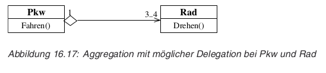

* Teile können gleichzeitig Teil verschiedener Aggregationen sein

---

* Aggregation ff
    * Darstellung kann auch in Baumform geschehen:

    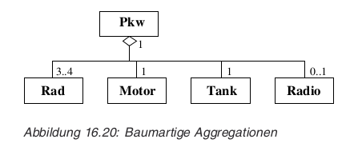

---

* Komposition (Aggregation mit existenzabhängigen Teilen) (S.274)
    * Bsp. Bankkonto und Geheimnummer
    * sobald Ganzes gelöscht wird müssen auch seine Teile gelöscht werden
    * das Ganze hat bestimmte Aufgaben für die Gesamtheit der Einzelteile.
      Rechnung → Positionen → Gesamtsumme

---

* Assoziation vs Aggregation
    * nicht immer einfach zu bestimmen
    * Wörter in menschlicher Sprache sind kontextabhängig, mehrdeutig
      (hat, besteht aus, enthält etc.)

---

* Umsetzung der Beziehungen in C++
    * nicht 1:1 umsetzbar, da in C++ verschiedenartig umsetzbar
    * Assoziation
        * lokales Objekt in Method
        * Parameter
        * Zeiger als Membervariable
        * siehe Code S.277
    * Komposition → Membervariable als Wert
        * Existenzabhängigkeit → Löschen der Membervariable
        * eher nicht als Zeiger
    * Aggregation → Membervariable als Zeiger
        * Ganzes und Teil können unabhängig existieren

---

* Befreundete Funktionen (S.288)
    * zwei oder mehrere Klassen arbeiten eng zusammenarbeiten
    * eine Klasse will einer Methode einer anderen Klasse
      Zugriff auf interne Daten geben (private)
    * → Freundklassen

        class Foo {
          friend void friendmethod(...);
          friend void Bar::friendmethod(...);
          ...
        }
    * siehe Code S.289 und S.290

---

* Befreundete Funktionen ff
    * Alternative: Setter/Getter
        * → keine feingranularige Vergabe von Zugriffsrechten möglich

    * Inline friend-Funktionen als Aliase zu privaten Memberfunktionen
        * siehe Code S.291

---

* Befreundete Klassen (S.292)
    * wenn zwei Klassen generell eng zusammenarbeiten müssen → friend-Klassen
    * siehe Code S.292

    * Stil: generell `friend` am Anfang der Klassendeklaration plazieren

    * Kritik:
        * Kapselung wird durchbrochen - insbesondere bei friend Methoden
        * "Verantwortung für Daten bei einer einzelnen Klasse" wird missachtet
        * `friend` muss im *vornherein* deklariert werden
            * kennt man alle möglichen Verwendungsszenarien im Vornherein?
            * Vergleiche `private` in Ruby, wo die Deklaration mehr normativen Charakter hat

---

* Vererbung, Operatoren, Templates und Exceptions (S.297)
    * bündeln von gemeinsamen, allgemeinen Eigenschaften in "Urklasse" (Basisklasse, Superklasse)
        * diese Eigenschaften in abgeleitete Klassen weitervererbt werden
    * Klassen tieferer Hierarchiestufen (abgeleitete Klassen, Unter-, Subklassen) sind Spezialisierungen
        * können weitere Eigenschaften hinzufügen

    * Vererbung ist keine Komposition
        * eine Subklasse *ist* eine Art der Basisklasse

    * Typische Anwendungsfälle für Vererbung
        * Generalisierung
        * Spezialisierung
        * Zusammenfassung von Eigenschaften mehrerer Klassen

---

* Design einer kleinen Grafikbibliothek mit UML (S.300)
    * Objekte positionieren, verschieben, zeichnen
    * zunächst Kreise und Rechtecke

    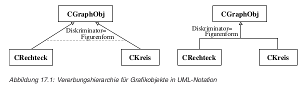

    * ein Kreis *ist* ein GraphikObjekt
    * Unterscheidung zwischen Ober- und Unterklasse erfolgt häufig aufgrund
      eines vom Designer festgelegten Unterscheidungsmerkmals, das auch als
      Diskriminator bezeichnet wird. Hier ist der Diskriminator die
      Figurenform.

---

* Design einer kleinen Grafikbibliothek mit UML ff
    * Kreis: Zentrum, Radius
    * Rechteck: diagonale Ecken

    * gemeinsame Eigenschaft: Verschieben ?
    * jedoch könnte man als gemeinsame Daten Mittelpunkt nehmen
        * das Verschieben vererben wird damit möglich

    * siehe Diagram S.303

---

* Einfache Vererbung in C++ (S.303)

    class Unterklasse: schutz_typ Basisklasse
    {
    }

    * Konsequenzen von Schutztypen bei Vererbung
    * default Schutztyp: private

---

* Restriktionen bei der Vererbung (S.307)
    * Konstruktoren, Destruktoren, operator= und Freunde werden nicht vererbt
        * siehe Beispiel S.308 unten
    * Unions können nicht vererben

---

* Abgeleitete Klassen und ihre Elemente (S.309)
    * siehe Beispiel-Umsetzung der Grafik Bibliothek S.309
    * siehe Speicheranalyse S.310

---

* Überschreiben von Memberfunktionen (S.311)
    * `draw()` ist zwar schon in Basisklasse vorhanden, wird aber
      von `Kreis` überschrieben (in Wirklichkeit überdeckt)
    * `draw()` von Basisklasse kann aber trotzdem aufgerufen werden
      mittels Scope Angabe - siehe Code S.312 oben und unten

---

* Überschreiben, Überladen und Mehrdeutigkeiten (S.313)
    * Überladen: verschiedene Schnittstellen
    * Überlschreiben: Redefinition einer in der Methode der Basisklasse

    * Gleiche Namen und Auflösen von Mehrdeutigkeiten
        * Scope Angabe
        * von spezifischeren zu allgemeineren Klassen (also in Richtung
          Basisklasse)
        * Methode der abgeleiteten Klasse verdeckt *alle* gleichnamigen 
          Methoden der Basisklasse, unabhängig von Signatur. D.h. Überladen
          findet nur auf der gleichen Hierarchiestufe statt.
        * siehe Code S.315 bzw. [erbnamgleich.cpp](erbnamgleich.cpp)

---

* Konstruktor- und Destruktoraufrufe (S.317)
    * Konstruktoren und Destruktoren werden nicht vererbt
    * *Standard*-Konstruktor der Basisklasse wird automatisch vor jenem
      der abgeleiteten aufgerufen
    * Basisklassen-Destruktor nach dem der abgeleiteten
    * siehe Code S.317
    * wenn ein anderer Konstruktor aufgerufen werden soll → Intialisierungsliste
        * siehe Code S.319

---

* Konstruktor- und Destruktoraufrufe ff
    * Konstruktoren werden in der Reihenfolge der Deklaration und
      nicht derjenigen der Initialiserungsliste ausgeführt
    * ohne Initialisierungslisten Eintrag → Standardkonstruktor
    * Anweisungen in Konstruktoren werden zuletzt ausgeführt
    * siehe Code und Fehlermeldung S.320

---

* Substitutionsprinzip (S.321)
    * Zuweisung von Unterklassen-Objekten an Oberklassen-Objekte
        * siehe Code S.322
        * Daten können so verloren gehen

            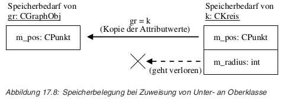

    * Zuweisung muss Ziel ausfüllen

---

* Substitutionsprinzip ff
    * für Zuweisungen von Basis- zu abgeleiteten Instanzen kann
      Zuweisungsoperator definieren:

            AbgeleiteteKlasse& operator=(const Basisklasse& instanz)

    * Zuweisung von Unterklassen-Zeigern an Oberklassen-Zeiger
        * Zeigertyp entscheidet darüber auf was der Zeiger zeigt
          und nicht das zugewiesene Objekt!
        * siehe Code und Grafix S.324
        * ggF. Casten (Achtung!)

---

* Virtuelle Methoden und Polymorphismus (S.333)
    * Frühe Bindung
        * auch "early binding", "static binding"
        * Zeigertyp legt zu verwendende Klasse fest
        * siehe Code S.333 unten und S.334 unten

---

* Späte Bindung mit virtuellen Methoden in Basisklasse (S.336)
    * auch "dynamic binding", "late binding"
    * eine Form von Polymorphismus
    * bei virtuellen Methoden legt Objekttyp zu verwendende Klasse fest
    * `virtual`
    * Methode wird zur *Laufzeit* ermittelt und nicht zu Link-Zeit
    * siehe Code S.336
    * bei Vererbung: einmal `virtual` immer `virtual`
        * bei Unterklassen zur Verständlichkeit `virtual` angeben  


---

* Späte Bindung mit virtuellen Methoden in Basisklasse ff
    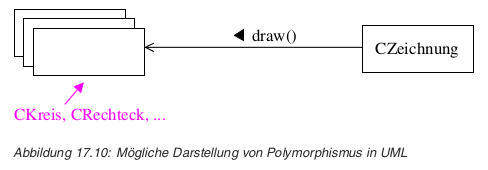

---

* Späte Bindung mit virtuellen Methoden in Basisklasse ff
    * Implementation mittels Virtual Method Table, welche zur
      Klasse des Objekts gehört
    * Performance?

    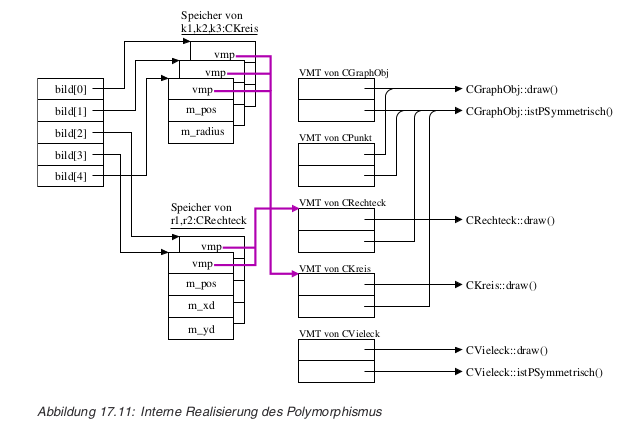

    * siehe auch Code S.339

---

* Späte Bindung mit virtuellen Methoden in Basisklasse ff
    * Regeln für virtuelle Methoden
        * Überschreiben virtueller Methoden ist nur mit
          gleicher Signatur und gleichem Rückgabetyp möglich
            * bei Abweichungen → *neue* Methode!
        * Definieren einer virtuellen Methode mit gleicher
          Signatur, aber unterschiedlichem Rückgabetyp in
          abgeleiteter Klasse nicht erlaubt

            * siehe Code S.341

---

* Späte Bindung mit virtuellen Methoden in Basisklasse ff
    * Regeln für virtuelle Methoden
        * Konstruktoren können nicht virtuel sein
        * statische Memberfunktionen können nicht virtuel sein
        * späte Bindung ist nur mit Zeigern und Referenzen möglich

            * siehe Code S.342

---

* Späte Bindung mit virtuellen Methoden in Basisklasse ff
    * Regeln für virtuelle Methoden
        * Neue Methoden in Unterklassen sind Basisklassenzeigern unbekannt

            * siehe Code S.342 unten
            * durch explizites Casting des Basisklassenzeigers in
              Subklassen-Zeiger werden die dort neu hinzugefügten Methoden
              bekannt

---

* Späte Bindung mit virtuellen Methoden in Basisklasse ff
    * Regeln für virtuelle Methoden
        * Frühe Bindung bei Aufruf virtueller Methoden im Konstruktor/Destruktor
            * Ruft man in einem Konstruktor oder Destruktor eine
              virtuelle Methode auf, so wird die entsprechende
              eigene lokale virtuelle Methode der Basisklasse und
              nicht die der zugehörigen abgeleiteten Klasse verwendet.

            * siehe Code S.343 unten

---

* Virtuelle Destruktoren (S.343)
    * Problem siehe Code und Output S.344 unten und S.345 oben
    * virtuellen Destruktor definieren, wenn Klasse mindestens eine
      virtuelle Funktion enthält. Auch wenn kein Speicher in
      Basisklasse alloziert wird, muss trotzdem ein leerer
      virtuellen Destruktor definiert werden, um zu erzwingen,
      dass Destruktoren der abgeleiteten Klassen aufgerufen werden.

    * siehe Code S.345 unten ff

---

* Polymorphie statt switch-Anweisung (S.346)
    * Polymorphismus ist switch-Anweisung ähnlich
    * Polymorphismus könnte via Code S.346 implementiert werden

    * Vorteil des Polymorphismus gegenüber switch-Anweisung ist,
      dass nicht bei jeder Verwendung ein switch Statement
      eingeführt werden muss (bzw. nicht vergessen werden kann!)
    * Nachteil: implizite, unsichtbare Mechanismen

---

* Polymorphie statt switch-Anweisung ff
    * Polymorphismus mit sich selbst reproduzierenden Objekten
        * siehe Code S.347
    * "Artverwandte Objekte lassen sich gemeinsam verwalten,
       aber jedes Objekt reagiert auf seine eigene, eventuell
       ganz unterschiedliche Art und Weise."

---

* Abstrakte Klassen in UML
    * wird nie direkt aufgerufen werden, sondern ausschliesslich
      abgeleitete Klassen
    * in UML Klassenname kursiv geschrieben oder mit
      `{abstract}` markiert
    * Methoden können auch als abstrakt markiert werden, wenn
      die Klasse keine Implementierung anbietet
    * abstrakte Klassen dienen dazu bestimmte Konzepte,
      Schnittstellen, Methoden bzw. Eigenschaften vorzugeben

---

* Abstrakte Klassen in C++
    * Rein virtuelle Methoden
        * Klasse wird zu einer abstrakten Klasse, wenn mindestens
          eine ihrer virtuellen Methoden mit 0 (Null) initialisiert
          wird

                class klasse
                {
                    // Reine virtuelle Methode:
                    virtual datentyp funktionsname(paramliste) = 0;
                };
                klasse object_1;   // Compiler-Fehler
                klasse* zgr;       // OK

        * wenn virtuelle Methode in Unterklasse nicht neu definiert
          wird bleibt diese Methode *rein virtuell* und die Klasse
          abstrakt

---

* Abstrakte Klassen in C++ ff

    * graphik.h:

            class CGraphObj
            {
                protected:
                    CPunkt m_Pos;
                public:
                    CGraphObj(int x=0, int y=0);
                    ;
                    void setPos(CPunkt p);
                    void move(int xd, int yd);
                    ;
                    virtual void       draw();
                    ;
                    virtual CGraphObj* create()          = 0;
                    virtual char*      getTypName()      = 0;
                    virtual bool       istPSymmetrisch() = 0;
            };

    * graphik.cpp:

            CGraphObj::CGraphObj(int x, int y)    { m_Pos.setPoint(CPunkt(x, y)); }
            void CGraphObj::setPos(CPunkt p)      { m_Pos.SetPoint(p);            }
            void CGraphObj::move(int xd, int yd)  { m_Pos.movePoint(xd, yd);      }
            void CGraphObj::draw()                { m_Pos.drawPoint();            }

---

* Regeln für virtuelle Methoden
    * Keine rein virtuellen Destruktoren
        * wenn rein virtuelle Methode (implizit) aufgerufen wird → Problem!
        * (rein virtuelle Destruktoren für "leere" methodenlose Klassen erlaubt)
    * `const virtual` Methoden bleiben auch in abgeleiteten Klassen
      konstant → können keine Daten verändern...

---

* Abstrakte Klassen und Polymorphismus (S.359)
    * definieren nur Interface, aber keine Implementation → alle Methoden
      rein virtuell
    * haben keine vmp...

---

* Mehrfachvererbung und virtuelle Basisklassen (S.362)
    * Mehrfachvererbung in C++

            class CDatum;
            class CZeit;
            class CZeitpunkt : public CDatum, public CZeit {
               ...
            };

    * Konstruktoren der Basisklasse werden wie gehabt in der Reihenfolge
      ihrer Deklaration und nicht in der Angabe der Ableitung ausgeführt

    * Konflikte bei Namen der Basisklassen können via Scope Operator
      aufgelöst werden
        * siehe ggF. Code S.363

---

* Mehrfachvererbung und virtuelle Basisklassen ff

    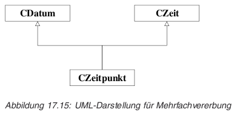

---

* Mehrfachvererbung und virtuelle Basisklassen ff

    * siehe Code S.364 → beachte doppelt vererbtes `m_alter`
    * siehe Speicherlayout S.365

---

* Virtuelle Basisklassen (S.368)
    * Direkte mehrfache Ableitung von ein und derselben Klasse ist
      nicht erlaubt
    * Indirekte mehrfache Ableitung von ein und derselben Klasse ist
      erlaubt

            class A;
            class A1 : public A;
            class A2 : public A;
            class B : public A1, public A2 { ... };

    * die Attribute der Klasse A werden zwei Mal in einer Instanz
      von B enthalten sein! → siehe Speicherdiagram S.370
      (siehe auch nächste Seite)

---

* Virtuelle Basisklassen ff

    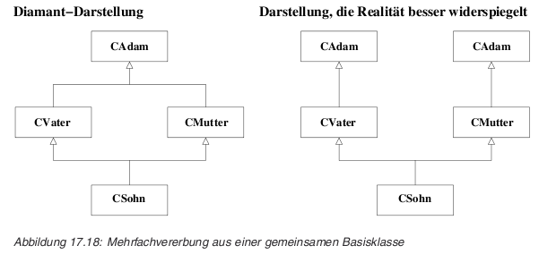

    * ggF. siehe Code 368 - beachte kuriose Zuweisung von Referenzen
      auf Basisklassen und siehe Erklärungs-Code S.371 oben

---

* Virtuelle Basisklassen ff

    * sollen Elemente einer indirekt mehrfach geerbten Basisklasse
      nur einmal in abgeleiteten Klassen vorhanden sein, so muss
      man bei der Ableitung das Schlüsselwort virtual angeben:

            class A                         { ... };
            class A1 : virtual public A     { ... };
            class A2 : virtual public A     { ... };
            class B  : public A1, public A2 { ... }; // virtual hier nicht mehr notwendig

    * siehe Code S.371 unten und besonders, siehe Speicherlayout S.373

---

* Virtuelle Basisklassen ff
    * da `virtual` Vererbung die Basisklasse via
      verborgenem Zeiger referenziert lassen sich virtuelle Basisklassen
      *nicht* mittels *statischem Casting* in abgeleitete Klassen
      konvertieren.

            CSohn s;
            ;
            // das folgende ist möglich, da Casting von abgeleiteter
            // Klasse auf Basisklasse
            CAdam *adamZgr = &s;
            ;
            // das hier folgende ist jedoch nicht möglich;
            // Compiler meldet Fehler wie:
            // cannot cast up from virtual baseclass ‘CAdam’
            CSohn *s2 = (CSohn *)adamZgr;

    * jedoch via `dynamic_cast` möglich, wobei dann in diesem
      Fall die Basisklasse *zwingend* Polymorph sein muss

        * siehe Code S.374

---

* Virtuelle Basisklassen ff
    * `virtual public` oder `public virtual`
      ist identisch
    * Virtuelle Ableitungen werden – anders als virtuelle Methoden –
      vom Compiler bearbeitet. Entsprechend der Vorgabe, ob eine
      Ableitung virtuell ist oder nicht, konstruiert der Compiler
      seine Klassen aus anderen Klassen. Virtuelle Ableitungen
      vermeiden zum einen Mehr- deutigkeiten beim Aufruf von
      Memberfunktionen aus der Basisklasse und zum anderen das
      Duplizieren von Membervariablen aus der Basisklasse.

---

* Implizite Konstruktoraufrufe bei Mehrfachvererbung (S.375)
    * Konstruktoraufrufe beim nicht-virtuellen Ableiten aller
      Basisklassen - siehe Code S.376

    * Konstruktoraufrufe beim virtuellen Ableiten von allen
      Basisklassen - siehe Code S.377

    * bei virtueller Ableitung, Aufruf der Konstruktoren
      **in der Reihenfolge der Ableitungen** (! und nicht
      in der Reihenfolge der Deklaration der Klassen !)
        * nur *einmal* initialisiert

    * Konstruktoraufrufe beim virtuellen und nicht-virtuellen
      Ableiten von Basisklassen:
        * zuerst virtuelle *Basisklassen*
        * dann non-virtuelle
        * siehe Code S.378

---

* Mehrfachvererbung – das Goto der 90er Jahre (S.380)
    * vermeiden
    * Java Interfaces?

---

* Überladen von Operatoren (S.385)
    * siehe Code S.385
        * Notation `add( bruch1, bruch2 )` etwas hässlich
          → + Operator wäre hübsch
	    * siehe Beispiele S.386

---

* Operatorfunktionen für binäre Operatoren (S.386)

        operator+  (...)  // für das Operatorzeichen +    (plus)
        operator-  (...)  // für das Operatorzeichen -    (minus)
        operator== (...)  // für das Operatorzeichen ==   (gleich)
        operator!= (...)  // für das Operatorzeichen !=   (ungleich)
        operator|| (...)  // für das Operatorzeichen ||   (logisches OR)
        operator&  (...)  // für das Operatorzeichen &    (bitweises AND)
        ......

    * siehe Code S.387 und S.388

---

* Unterschiede zwischen Methoden- und globalen Operatorfunktionen (S.389)
    * Deklarations-Syntax, zwei vs. ein Methodenparameter
    * globale Definition muss mit `friend` in Klasse
      deklariert werden damit die Implementation Zugriff auf
      private Klassenattribute hat

    * Operatoren =, (), [], -&gt; und -&gt;* lassen sich nur als
      Methode überladen

    * Globale Operatorfunktion erforderlich, wenn linker Operand
      Standarddatentyp ist
        * siehe Code S.390

---

* Unterschiede zwischen Methoden- und globalen Operatorfunktionen (S.389)
    * Globale Operatorfunktion erforderlich, wenn linker Operand
      nicht veränderbare Klasse ist
        * z.B. 3rd party Bibliothek oder Standardbibliothek
        * siehe Code S.390

    * Standardoperatoren auf Standardtypen können nicht überladen
      werden

---

* Operatorfunktionen für unäre Operatoren (S.393)
    * siehe Code S.393

    * Unterscheidung von Präfix- und Postfix-Operatoren
        * Postfix Operator hat zusätzlichen dummy `int`
          Parameter
        * bei Postfix eine *unveränderte* Kopie des Objekts
          zurückgeben - siehe Code S.395

---

* Parameter und Rückgabewerte (S.396)
    * Grundsätzlich Referenz-Parameter verwenden (aus Performanzgründen)
    * const-Referenzen für Parameter, die keine Änderung erfahren:
        * insbesondere erster Parameter bei globalen binären Operatoren
          bei nicht-Zuweisungen
        * der Parameter bei den unären globalen Operatorfunktionen
          +, -, ! und ~
    * Rückgabe von nicht-const-Referenzen bei Zuweisungsoperatoren
    * Rückgabe von const-Referenzen bei:
        * unärem +
        * Präfixoperatoren
    * Rückgabe von const-Objekten bei
        * binären Operatoren, die keine Zuweisungs-, Vergleichs- oder
          logische Operatoren sind
        * unäre -, ! und ~
        * Postfixoperatoren

---

* Funktionscharakter der Operatorfunktionen (S.399)
    * Operatoren sind "normale" Funktionen bzw. Methoden
    * erlauben aber keine default Parameter
    * können auch in explizer Form aufgerufen werden

            // (binärer Operator als Methode)
            CBruch b1, b2, b3;
            b3 = b1.operator+ (b2);
            // statt:
            b3 = b1 + b2;

---

* Einschränkungen beim Überladen von Operatoren (S.399)
    * folgende Operatoren können überladen werden:

            +    -     *     /     %     ^     &     |     ~      !
            =    <     >     +=    -=    *=    /=    %=    ^=     &=
            |=   <<    >>    <<=   >>=   ==    !=    <=    >=     &&
            ||   ++    --    ->*   ,     ->    []    ()    new    delete

    * folgende Operatoren können nur in Form von Methoden, also nicht
      durch globale Methoden überladen werden:

            = Zuweisungsoperator   [] Indexoperator   () Funktionsaufrufsoperator
            -> Pfeiloperator       Cast-Operator

---

* Einschränkungen beim Überladen von Operatoren (S.399)

    * Folgende Operatoren können nicht überladen werden:

            sizeof   ?:   .    .*   ::   #   ##

        * # und ## sind Präprozessor Operatoren

    * Priorität und Assoziativität von Operatoren werden nicht verändert

    * << und >> werden in C++ standardmäßig zur Ein- und Ausgabe über
      `iostreams` benutzt

---

* Überladen der Ein- und Ausgabeoperatoren (<< und >>) (S.400)
    * Stream-Ausgabe für elementare Datentypen (S.400)
    * die Klasse `ostream` aus der
      `&lt;iostream&gt;` Bibliothek definier
      Ausgabemethoden für diverse elementare Datentypen:

            class ostream {
              public:
                ostream& operator<< (bool& wert);
                ostream& operator<< (short& wert);
                ...

---

* Stream-Ausgabe für elementare Datentypen ff
    * `cout` ist ein vordefiniertes globales Objekt
      der Klasse `ostream` (ähnlich wie in C der
      vordefinierte `FILE`-Zeiger `stdout`).
      Eine Anweisung wie:

             cout << 1;

    * wird vom Compiler umgesetzt in

             cout.operator<< (1);

    * da alle <<-Operatorfunktionen eine Referenz auf das aktuelle
      Streamobjekt als Rückgabewert liefern, ist eine Verkettung
      mehrerer Ausgaben in einem Ausdruck möglich:

             cout << 1 << 2;


---

* Benutzerdefinierte Stream-Ausgabe für eigene Klassen (S.401)

        ostream& operator<<(ostream& os, const CBruch& b) {
            return os << ’(’ << b.getZaehler() << "/" << b.getNenner() << ’)’;
        }

    * `&lt;&lt;` kann nur via globale Funktion überladen werden

---

* Stream-Eingabe für elementare Datentypen (S.403)
    * analog zu `ostream`, gibt's einen `istream`
      mit einem `&gt;&gt;` Operator

    * Fehlerbehandlung bei der Eingabe:

            int i;
            cin >> i;
            if (cin) {
                // Eingabe ok!
                ...
            } else {
                // nix gut (z.B. Buchstabe statt Zahl eingegeben)
                cin.clear();
                // Fehlerstatus löschen
                cin.ignore(INT_MAX, ’\n’); // alle restl. Zeichen im Eingabepuffer überlesen
                ...
            }

    * diese Art von Parsen könnte problematisch sein, wenn der Input nicht interaktiv
      ist!

---

* Benutzerdefinierte Stream-Ausgabe für eigene Klassen (S.401)

        istream& operator>>(istream& is, CBruch& b) {
            int z, n;
            is >> z >> n;
            b.set(z, n);
            return is;
        }

---

* Spezielle Operatoren (S.406)
    * Folgende Operatoren können nur durch Memberfunktionen überladen werden:

            Zuweisungsoperator =
            Indexoperator []
            Funktionsoperator ()
            Pfeiloperator ->
            Cast-Operatoren
            Pointer-to-Member-Dereference-Operator ->*

---

* Überladen des Zuweisungoperators = (S.406)

        CStr& operator=(const CStr& rechtOp) {
            if (m_str)
                delete[] m_str;
            if (rechtOp.m_str) {
                // rechtOp ist nicht leer
                if ( (m_str = new char[strlen(rechtOp.m_str)+1]) )
                    strcpy(m_str, rechtOp.m_str);
            } else
                m_str = 0;
            // rechtOp ist ein leeres Stringobjekt
            return *this; // Ergebnis entspricht Wert des linken Operanden,
            // der durch das aktuelle Objekt repräsentiert wird
        }

---

* Überladen des Zuweisungoperators ff

    * Implementation des Zuweisungsoperators (anstatt des defaults)
      ist wahrscheinlich notwendig, wenn Membervariablen Pointer oder
      Referenzen sind

    * und zwingend, wenn Membervariablen konstant sind (dann würde eine
      Zuweisung via default `=` Operator einen Compile-Fehler
      verursachen)

            constjahr.cpp:22: error: non-static const member ‘const int CMonat::m_jahr’,
                                     can’t use default assignment operator

   * folgendes gibt keinen Fehler - warum?

            CMonat urlaub(juli); // identisch zu: CMonat urlaub = juli;

---

* Überladen des Indexoperators [] (S.408)

        class IntArray {
            ...
          public:
            int& operator[] (unsigned index) {
                pruefeIndex(index);
                return my_array[index];
            }
          private:
            void pruefeIndex(unsigned index) const {
                if (index < 0 || index >= my_max) {
                    cerr << " ----> Ungültiger Index: " << index << endl;
                    exit(1);
                }
            }
            ...
        }

---

* Überladen des Funktionsoperators () (S.410)
    * binärer Operator - rechter Parameter ist die __Parameterliste__
    * wird als Funktions-Objekt bzw. Funktor bezeichnet
    * siehe Code S.410 und S.412

---

* Überladen des Pfeiloperators -> (S.413)
    * unärer Operator

            obj.operator->()

    * der obere Ausdruck muss Folgendes zurückgegben:
        * (Referenz auf) Memberobjekt von obj mit eigenem Operator ->
            * auf das gelieferte Memberobjekt __muss__ dann der
              überladene Operator -> anwendbar sein:

                    obj->name

           * dies wird intern, wenn `obj` selbst kein Zeiger
             ist, wie folgt interpretiert:

                    (obj.operator->()).operator->().name

                    //... Aufgelöst entspricht dies:
                    (obj.operator->())            // 1. liefert memberObj von obj
                    memberObj.operator->().name   // 2. liefert name von memberObj

          * somit wird `name` des Memberobjekts zurückgegeben

       * Zeiger auf Memberobjekt von obj ohne eigenen Operator ->
           * in diesem Fall muss die __Adresse__ eines Memberobjekts von
             obj zurückgegeben werden, damit der Standardoperator -> darauf
             angewendet werden kann

    * siehe Code S.414

---

* Überladen des Pfeiloperators -> ff
    * via überladenem `-&gt;` sind realisierbar:
        * Smartpointer
        * Referenzpointer

---

* Einschub: Smart- und Referenzpointer (S.1144)
    * werden später noch einmal ausführlich behandelt
    * Smartpointer
        * siehe Code S.1144
        * kann eingesetzt werden für:
            * Automatisches Löschen des Speicherplatzes
            * Automatische Initialisierung

---

* Referenzpointer (S.1146)
    * zählen, wie viele Pointer auf Objekt zeigen
    * Objekt wird erst gelöscht, wenn keine Pointer mehr darauf zeigen
    * siehe Code S.1146

---

* Smart Pointers in C++11
    * ursprünglich aus den Boost Libraries
    * in g++ / stdlibc++ enthalten ab V4.5

---

* auto_ptr
    * exklusiver Besitz eines Pointers
    * deprecated
    * siehe http://en.wikipedia.org/wiki/Auto_ptr

            #include <memory>
            using namespace std;
            ;
            main()
            {
                int* i_ptr = new int(42);
                ;
                auto_ptr<int> p1(i_ptr);
                auto_ptr<int> p2;
                ;
                p2 = p1; // transferiert pointer von p1 nach p2!
                ;
                // p2 geht out of scope -> "delete i" wird aufgerufen.
            }

    * funktioniert **nur** mit Pointern, welche mit `new` erstellt
      wurden. Funktioniert **nicht** mit `new[]` oder
      `*malloc`!

    * kann nicht mit STL Kontainern verwendet werden, die Elemente kopieren!

---

* unique_ptr
    * ex auto_ptr
    * siehe http://en.wikipedia.org/wiki/Smart_pointer#unique_ptr
    * hat **keinen** Zuweisungsoperator
    * dafür hat es eine move Methode:

            int* i_ptr = new int(42);

            auto_ptr<int> p1(i_ptr);
            auto_ptr<int> p2;

            p2 = std::move(p1);

---

* shared_ptr
    * reference counting + auto-delete
        * (nur) Reference Counting ist threadsafe
    * zirkuläre Referenzen!

* weak_ptr
    * kann zum Aufbrechen von zirkuläre Referenzen verwendet werden. Ein
      Objekt Zeiger, welcher nur noch in einem `weak_ptr`
      vorkommt wird `delete`'d

---

* Vorsicht beim Überladen von Operatoren (S.415)
    * nette Effekte, aber Programm kann für andere unverständlich werden

            if (!zgr)
                !"Speicherplatzmangel";

    * vorgegebene Prioritäten beachten:

            2^8 + 1

      auch wenn `^` hier als Potenzoperator überladen sein
      sollte behällt er die Prio des original-XOR Operators. Die Prio
      wär dann unerwarteterweise:

            2^(8 + 1)

      die resultierende Semantik wäre also sehr fehleranfällig!
      
    * __überlädt man Operatoren für eine Klasse, so sollte dies
      vollständig und konsistent erfolgen!__

---

* Templates (S.431)
    * Anwendungsfall: Implementation des gleichen Algorithmus für
      verschiedene Datentypen:
        * Stack
        * Listen
        * Sortieralgorithmen
    * Vorteile:
        * Reduktion von Code →
            * weniger Fehler
            * tendenziel geringerer Programmieraufwand
        * Debugging?
        * Code wird abstrakter → wiederverwendbarer

    * Templates anwendbar auf Funktionen und Klassen
    
---

* Funktionstemplates (S.431)

        int summeArray(int array[], unsigned n) {
            int summe = 0;
            for (unsigned i=0; i < n; i++)
                summe += array[i];
            return summe;
        }

    * produziert falsches Resultat, wenn mit
      `double[]` aufgerufen → neue Funktion
      für Arrays von `double`s

---

* Funktionstemplates ff

        double summeArray(double array[], unsigned n) {
            double summe = 0;
            for (unsigned i=0; i < n; i++)
                summe += array[i];
            return summe;
        }

    * → langweilig!

---

* Definition von Funktionstemplates (S.432)
    * um Funktionstemplate zu definieren,
      `template &lt;typename Platzhalter &gt;` davorstellen

            template <typename T>
            T function (T var1, T var2) {
                ...
            }

    * statt `typename` kann auch `class` verwendet
      werden, jedoch deprecated!

---

* Definition von Funktionstemplates ff
    * somit:

            template <typename T>
            T summeArray(T array[], unsigned n) {
                T summe = 0;
                for (unsigned i=0; i < n; i++)
                    summe += array[i];
                return summe;
            }

    * Funktionstemplates müssen im Header definiert werden

---

* Erzeugen von Funktionen zu Funktionstemplates (S.434)
    * Template Funktion mit entsprechenden Parametern
      einfach verwenden, der Compiler definiert dann die
      parametrierte Funktion von sich aus
    * siehe Code S.434

---

* Default-Werte bei Funktionstemplates (S.435)
    * sind nicht erlaubt
    * jedoch können Konstruktoren des Template-Parameters
      als Defaultwert angegeben werden
    * diese Konstrukturen geben dann typischerweise einen
      "Null Wert" zurück
    * siehe Code S.435

---

* Spezialisierung von Funktionstemplates (S.435)
    * im Falle, dass es Parametertypen gibt welche eine andere
      Implementation, als die vom Funktionstemplate
      vorgegebene benötigen, kann man das Funktionstemplate
      "spezialisieren":

            template <typename T>
            T summeArray(T array[], unsigned n) {
	        ...
            }
            template <> char *summeArray<char *>(char *array[], unsigned n) {
	        ...
            }

    * siehe Code S.436

---

* Spezialisierung von Funktionstemplates ff
    * wenn der Compiler den parametrierten Datentypen selbst
      ermitteln kann, dann kann dieser bei der Deklaration
      wegeglassen werden. Statt:

            template <> char *summeArray<char *>(char *array[], unsigned n) {

      wäre somit auch OK:

            template <> char *summeArray(char *array[], unsigned n) {

    * man kann im vorliegenden Fall, `template`
      auch weglassen, da sich Templates und Funktionen
      gegenseitig überladen dürfen. Somit:

            char *summeArray(char *array[], unsigned n) {

---

* Überladen von Funktionstemplates (S.437)
    * siehe Code S.437 ab Mitte
    * man kann beim Aufruf dem Compiler mitteilen die Template Version
      einer Funktion zu benutzen, indem man beim Aufruf ein `<>`
      hinzufügt:

            add<>(10.3, 20.6)
            

    * wenn eine gleichewertige Wahl besteht bevorzugt der Compiler die
      nicht-Template (d.h. die spezifischere) Version

---

* Mehrdeutigkeiten bei Funktionstemplates (S.438)
    * Auflösen von Mehrdeutigkeiten durch Festlegen des Platzhaltertyps beim Aufruf

             add<int,double>(1, 2.5);

    * Auflösen von Mehrdeutigkeiten mittels typename
        * im Falle, dass sowohl ein Typ als auch eine Variable gleichen Namens
          existieren, interpretiert der Compiler das Symbol als Variable. Man
          kann die Situation mit einer `typename` Deklaration klären.
        * siehe Code S.440

---

* Funktionstemplates mit mehreren Platzhaltern (S.440)

        template <typename T1, typename T2>
        void function (T1 var1, T2 var2) { ....  }

---

* Klassentemplates (S.441)
    * Definition und Deklaration von Klassentemplates (S.441)

            template <typename T >
            class Klassen_Template
            {
              public:
                void meth1(T x)          { ... }
                T    meth2(char x, T y)  { ... }
                T    meth3(T x)          { ... }
              private:
                T    variable;
            };

    * statt `typename` kann auch `class`
      angegeben werden:

             template <class T >
             class Klassen_Template
                 ...

---

* Definition von Klassentemplates mit nicht-inline-Methoden (S.442)

        template <typename T >
        class Klassen_Template {
          public:
            void meth1(T x);
            T meth2(char x, T y);
          private:
            T variable;
        };

        template <typename T >
        void Klassen_Template<T >::meth1(T x) { ... }

        template <typename T >
        T Klassen_Template<T >::meth2(char x, T y) { ... }

---

* Default-Typen bei Klassentemplates
    * Anders als bei Funktionstemplates kann man bei
      Klassentemplates für die Platzhalter Default-Typen
      angeben, die zu verwenden sind, wenn der Nutzer
      eines Klassentemplates keinen Typ explizit festlegt.

            template <typename T = int>
            class Klassen_Template { ... };

---

* Vorwärtsdeklaration von Klassentemplates

        template <typename T >
        class Klassen_Template;

---

* Erzeugen von Klassen aus Klassentemplates (S.443)
    * Definition eines Objektes und Belegen des
      Platzhalters T mit dem Datentyp char

            Klassen_Template<char> object_1;

    * siehe Code S.444 (inline) und S.445 (ausserhalb)

---

* Deklaration von externen Objekten aus Klassentemplates (S.443)

        extern Klassen_Template<char> object_1;

---

* Klassentemplates mit Nicht-Typparametern (S.445)

        template<typename T = int, int max = 5>
        class CArray { ... };

    * nicht-Typ-Parameter müssen bei der Instanzierung der
      Objekte konstant sein, da der Compiler eine entsprechende
      Klasse erzeugt.

    * diese vorgegebenen Parameter sind **keine** Membervariablen
      und können nur innerhalb des Klassentemplates angesprochen
      werden.

    * siehe Code S.446

---

* Spezialisierung von Klassentemplates (S.447)

        template<typename T>
        class CAdd { ... };
        
        template<> 
        class CAdd<char *> { 
          public:
            CAdd<char *>(...) { ... }; // Konstruktor
            ~CAdd<char *>() { ... }; // Destruktor
          ...
        }
 
---

* Teilweise Spezialisierung von Klassentemplates (S.449)
    * siehe Code S.449 - 551

    * bei einer Wahl nimmt der Compiler immer die
      spezifischere Klasse

---

* Klassentemplates und statische Datenelemente (S.451)
    * statische Datenelemente innerhalb von Klassentemplates
      werden für jede Klasse einzeln angelegt.

    * dieses Datenelement gilt dann aber für alle Objekte
      einer instantiierten Klasse gemeinsam

    * siehe Code S.451 ab Mitte

---

* Templates in der UML (S.452)
    * in UML werden Templateklassen als "parametrisierbare"
      bzw. "generische" Klassen bezeichnet.

    * mit konkreten Parametern entstehen daraus
      "parametrierte" Klassen

    * UML kennt zwei Arten von Darstellungen für Templates

---

* Templates in der UML ff
    * erste Darstellungsform von Templates: es werden nur
      die parametriesierten Klassen daragestellt

    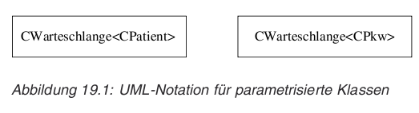

---

* Templates in der UML ff
    * zweite Darstellungsform von Templates. Es wird die
      *Bindung* der parametrierten an die generische Klasse
      ersichtlich. Im Englischen wird deshlab die erstere auch
      als "bound element" bezeichnet.

    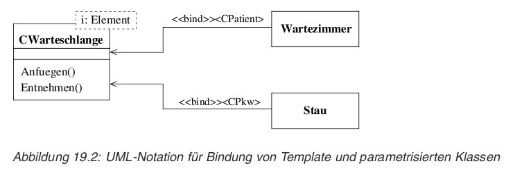

---

* Exceptions (Ausnahmebehandlung) (S.457)
    * Fehlerbehandlung in C:

            double *str;
            ...
            if ( (str = malloc(100*sizeof(double)) == NULL) {
                fprintf(stderr, "Speicherplatzmangel\n");
                exit(1);
            }

    * oder

            #include <stdio.h>
            #include <signal.h>

            void null_division(int sig) {
                fprintf(stderr, ".... Division durch 0 abgefangen\n");
                exit(2);
            }

            int main(void) {
                int z;
                signal(SIGFPE, null_division); // Einrichten Signalhandler für SIGFPE
                z = 123/(10-10);
                return 0;
            }

    * oder Verwenden der beiden Funktionen `longjmp()`
      und `setjmp()`. Mit diesen ist es möglich, aus einer
      beliebig tief in der Aufrufhierarchie befindlichen Funktion
      an einen zuvor durchlaufenen und mit `setjmp()`
      markierten Punkt mittels `longjmp()` – über
      mehrere Ebenen hinweg – zurückzukehren.

---

* Die Schlüsselwörter try, catch und throw (S.458)

        try
        {
            // Block klammern, in dem Exceptions auftreten können
        }
        catch ( char *text ) 
        {
            // auszuführende Anweisungen beim Auftreten von char * Exceptions
        }

---

* Auslösen von Exceptions mit throw

        throw "kein Speicherplatz mehr vorhanden";
 
        throw 4711;

---

* Auslösen von Exceptions mit throw ff

    * beim Auslösen von Exceptions werden alle lokalen Variablen destroyed.

    * wenn eine lokale Variable an `throw` übergeben wird, wird
      zuerst eine lokale Kopie dieser Variable erstellt.

    * siehe Code S.460-461 oben - beachte das doppelte Kopieren!

    * erwartet der `catch` jedoch eine Referenz, dann wird das
      Objekt nur einmal kopiert.

    * wird ein Pointer auf die lokale Variable übergeben, dann ist dieser
      innerhalb des `catch` ungültig, da das Objekt dann schon
      gelöscht wurde:

    * siehe Code S.461

---

* Abfangen von Exceptions (S.462)
    * Der try-Block
        * Verschachtelung OK
        * siehe Code S.462

    * Der catch-Block (S.463)
        * für jede Art von `throw` Parameter muss ein eigener
          "Exception Handler" aka `catch` Block geschrieben werden
        * siehe Code S.463
        * es wird immer nur der erste passende `catch` Block
          ausgeführt
        * eine nicht abgefangene Exception beendet das Programm

---

* Typunabhängiges Abfangen mehrerer Exceptions (S.467)
    * aka default Exception Handler

            catch(...) {
                // exception handling
            }
            
    * sollte letzter in der Liste sein

---

* Weiterleiten von Exceptions
    * via `throw` ohne Argumente:

            catch( int e ) {
                ...
                if( wir_koennen_die_exception_nicht_sinnvoll_behandeln )
                    throw;
            }

    * leitet die Exception auf die nächsthöhere Ebene weiter

---

* Nicht abgefangene Exceptions (S.470)
    * wenn nicht abgefangen, wird `terminate()` aufgerufen, welches die
      C-Funktion `abort()` aufruft. Dabei werden keine Destruktoren für
      globale oder statische Objekte aufgerufen.
    * `terminate()` wird auch aufgerufen, wenn in einem Destruktor eines
      lokalen Objekts oder in einem Konstruktor oder Destruktor eines
      globalen oder statischen Objekts eine Exception auftritt.

---

* Nicht abgefangene Exceptions ff
    * mit `terminate_handler set_terminate( terminate_handler f))` kann
      eine eigene Terminierungsfunktion gesetzt werden. Dabei wird die
      vorherige Terminierungsfunktion zurückgegeben.
    * terminate_handler ist `void f()` und darf selbst keine
      Exceptions werfen und muss sich mittels `exit()` beenden, damit
      nicht das ursprüngliche `terminate` aufgerufen wird und `abort()`
      aufruft.

    * siehe Code S.470

---

* Vordefinierte Standard-Exceptions (S.472)
    * wenn Standard-Exceptions nicht ausreichen → ableiten und erweitern
    * Headerdatei `<exception>` definiert Klasse `exception` welche
      Basisklasse aller Standard-Exceptionklassen ist

---

* Vordefinierte Standard-Exceptions ff
    * in `<stdexcept>` sind definiert:
        * `logic_error`: für logische Fehler, wie z. B. Übergabe eines
          unerlaubten Arguments. Solche Fehler sind prinzipiell vermeidbar.

        * `runtime_error`: für Laufzeitfehler, wie z. B. Hardwarefehler,
          Speicherplatzmangel usw. Solche Fehler sind nicht vorhersehbar.

    * Alle von `logic_error` bzw. `runtime_error` abgeleiteten Klassen
      stellen einen Konstruktor mit `string`-Argument für eine Fehlermeldung
      zur Verfügung.

    * `const char* what()` Methode gibt diese Fehlermeldung zurück.

    * siehe Code S.472

---

* Vordefinierte Standard-Exceptions ff
    * Standard Exception Klassen siehe S.473
    * siehe Code ebenda

---

* Exception-Spezifikationen (S.474)
    * Exceptions sollten explizit gemacht werden in der Interface
      Definition und gehören zum Fingerabruck

    * `char*` und `int` Exceptions können auftreten:

            void f_with_exception(....) throw(char *, int);

    * wirft keine Exception:

            void f_wo_exception(....) throw();

    * kann eine beliebige Exception auslösen:

            void f(....);

---

* Exception-Spezifikationen (S.474)
    * wenn eine andere Exception ausgelöst wird als im Interface
      angegeben → Laufzeitfehler; kann nicht ge`catch`ed werden).
    * dabei wird die Funktion `unexpected()` aufgerufen
    * diese kann analog zu `set_terminate()` mit
      `set_unexpected(handler)` gesetzt werden.
    * siehe Code S.476

---

* Exception-Spezifikationen ff
    * Schicken einer nicht erlaubten Exception in der
      `unexpected()` Funktion
        * wenn `std::bad_exception` ist in `throw()`-Liste
          der auslösenden Funktion ist, dann wird Exception
          in `std::bad_exception` umgewandelt
        * ansonsten `terminate()`

---

* STL, RTTI, Namensräume, Memberzeiger (S.485)
    * Acronyme:
        * Standard Template Library
        * Run Time Type Information

---

* Standard Template Library (STL) (S.487)
    * allgemein gültige Datenstrukturen und Algorithmen

    * ursprünglich bei Hewlett-Packard in jahrelanger Forschungsarbeit
      entwickelt und 1994 als Teil des ISO/ANSI C++-Standards akzeptiert

---

* Die Klasse string (S.487)
    * Sonderform eines Containers - entspricht `char`-Array
    * übernimmt Speicherverwaltung
    * siehe Code S.488

---

* Die Klasse pair (S.488)
    * Templateklasse `pair<T1,T2>`

            #include <utility>
            ...
            pair<string, int> person1("Hans", 37),
                              person1("Antonia", 27);
    * interessante Details:
        * `pair()` - default-Konstruktor; nur möglich, wenn sowohl
           T1 als auch T2 ihrerseits Default-Konstruktoren anbieten.

        * `bool operator==(const pair& p1, const pair& p2)`
          nur möglich, wenn T1 und T2 auf Gleichheit geprüft werden
          können

    * siehe Code S.490

---

* Das grundlegende Konzept der STL (S.491)
    * Container
    * Iteratoren - Zugriff auf einzelne Datenelemente von Containern
    * Algorithmen - Templatefunktionen, welche auf Container bzw.
                    Iteratoren anwendbar sind, z.B. Sortieren.

---

* Das Prinzip der Iteratoren (S.492)
    * siehe Code S.492 (doppelt verkettete Liste)
    * Iteratoren sind innerhalb des jeweiligen Containers definiert
    * Iterator ist **auch** ein Zeiger auf das Element, folglich ist
      `*iterator` das Element selbst
    * `end` ist das `NULL` Element am Ende, das **nicht** ausgegeben
      werden kann

---

* Wichtige Methoden von Containern (S.494)
    * siehe Aufstellung S.494

---

* Die Klasse list (S.495)
    * siehe Code S.495

---

* Die Klasse vector (S.496)
    * entspricht einem C-Array, kann aber dynamisch wachsen
    * im Gegensatz zu Liste, direkter Zugriff auf n-tes Element
    * in der Mitte eines Vectors Einfügen ist "langsam"
    * siehe Code S.497

---

* Die Klasse deque (S.498)
    * double-ended queue

---

* Der Klassen stack und queue (S.499)
* Die Klasse priority\_queue (S.500)
* Das Klassen set und multiset (S.504)

---

* Die Klassen map und multimap (S.508)

---

* Algorithmen (S.513)
* Sortieren mit sort() (S.514)

---

* Umkehren der Reihenfolge mit reverse() (S.514)
* Iterieren von Containern mit for\_each() (S.515)

---

* Keine Fehlerbehandlung in der STL (S.517)
* Vorteile der STL (S.517)

---

* Laufzeit-Typinformationen (RTTI) (S.523)
* dynamic\_cast-Operator – Dynamisches Casting zur Laufzeit (S.523)

---

* dynamic\_cast-Operator – Dynamisches Casting zur Laufzeit ff

---

* typeid-Operator – Ermitteln des Objekttyps (S.530)

---

* Namensräume (S.537)
* Definition von Namensräumen (S.537)

---

* Zugriff auf Elemente in Namensräumen (S.540)
* Das Schlüsselwort using (S.541)

---

* Das Schlüsselwort using ff

---

* Geschachtelte Namensräume (S.551)
* Namensräume in Headerdateien (S.555)
* Namensräume und Vererbung (S.557)

---

* Zeiger auf Klassenmember (S.559)
* Zeiger auf Membervariablen in Klassen (S.559)
* Zeiger auf Methoden in Klassen (S.560)

---

* Zeiger auf Klassenmember und Vererbung (S.565)
* Größe von Zeigern auf Member in Klassen (S.566)

---

* Entwurfsprinzipien und Entwurfsmuster (S.567)
* Weitere UML-Konstrukte hinsichtlich OOD (S.569)
* Pakete/Packages (S.569)

---

* Komponenten (S.570)
* Verteilungsdiagramm (S.570)

---

* Entwurfsprinzipien (S.571)
* Analysiere das Design iterativ nach Vor- und Nachteilen (S.571)

---

* Analysiere das Design iterativ nach Vor- und Nachteilen ff

---

* Abstrahiere auf die Zukunft hin (S.575)
* Eine Klasse – eine Aufgabe (S.576)

---

* Programmiere auf die Schnittstelle hin (S.578)

---

* Programmiere auf die Schnittstelle hin ff

---

* Ziehe Aggregation der Vererbung vor (S.584)

---

* Generischer Code vermeidet Fehler (S.587)

---

* Generischer Code vermeidet Fehler ff

---

* Beachte Ownership des Speichers (S.592)
* Unterschiedliche Arten von Ownership (S.592)
* Exclusive Ownership (S.592)
* Forward Ownership erfordert Absprachen (S.592)
* Common Ownership erfordert projektweite Regelung (S.593)

---

* Beachte Ownership des Speichers ff

---

* Beachte Ownership des Speichers ff

---

* Achte auf Gleichförmigkeit des Codes (S.601)
* Verwendung von Entwurfsmustern (S.601)

---

* Verwendung von Entwurfsmustern ff

---

* Verwendung von Entwurfsmustern ff

---

* Einhaltung von Programmierrichtlinien (S.610)

---

* Verwendung eines MVC-Designs (S.612)

---

* Objektorientierte Vorgehensweise (S.629)
* Grundprinzipien der objektorientierten Softwareentwicklung (S.629)
* Anwendungsfallgetrieben (S.629)
* Architektur- und Komponentenzentriert (S.630)
* Iterativ und inkrementell (S.630)

---

* UML-Konstrukte für die Analysephase (S.631)
* Diagramme für die Analysephase (S.631)

---

* Anwendungsfalldiagramm (Use Case Diagram) (S.631)

---

* Anwendungsfalldiagramm (Use Case Diagram) (S.631)

---

* Anwendungsfalldiagramm (Use Case Diagram) ff

---

* Aktivitätsdiagramm (S.634)

---

* Aktivitätsdiagramm ff

---

* CRC-Karten (S.637)
* Entwicklungsphasen im Überblick (S.638)

---

* Entwurfsmuster (Design Patterns) (S.641)
* Überblick über die Entwurfsmuster (S.641)

---

* Überblick über die Entwurfsmuster ff

---

* Polymorphe Fabrik (S.648)

---

* Fabrik (factory) mit statischer Methode in Basisklasse (S.645)
* Fabrik mit statischer Methode und polymorphe Fabrik (S.645)

---

* Erzeugungsmuster (creational patterns) (S.652)
* Abstrakte Fabrik (abstract factory) (S.652)

---

* Abstrakte Fabrik (abstract factory) ff

---

* Fabrikmethode (factory method) (S.658)

---

* Fabrikmethode (factory method) ff

---

* Singleton (S.664)

---

* Singleton ff

---

* Erbauer (builder) (S.666)

---

* Erbauer (builder) ff

---

* Prototyp (prototype) (S.671)

---

* Prototyp (prototype) ff

---

* Strukturmuster (structural patterns) (S.678)
* Kompositum (composite) (S.678)

---

* Kompositum (composite) ff

---

* Fassade (facade) (S.681)

---

* Fassade (facade) ff

---

* Proxy (S.684)

---

* Proxy ff

---

* Adapter (S.689)

---

* Adapter ff

---

* Dekorierer (decorator) (S.692)

---

* Dekorierer (decorator) ff

---

* Brücke (bridge) (S.700)

---

* Brücke (bridge) ff

---

* Fliegengewicht (flyweight) (S.706)

---

* Fliegengewicht (flyweight) ff

---

* Verhaltensmuster (behavioral patterns) (S.711)
* Iterator (S.711)

---

* Beobachter (observer) (S.716)

---

* Schablonenmethode (template method) (S.721)

---

* Befehl (command) (S.725)

---

* Befehl (command) ff

---

* Zustand (state) (S.732)

---

* Strategie (strategy) (S.740)

---

* Zuständigkeitskette (chain of responsibility) (S.744)

---

* Vermittler (mediator) (S.748)

---

* Besucher (visitor) (S.754)

---

* Interpreter (S.762)

---

* Memento (S.769)

---

* Portable GUI-Programmierung mit Qt (S.777)
* Was ist Qt und warum Qt? (S.779)
* Der Begriff „Widget“ (S.780)
* Die Qt-Online-Dokumentation (S.781)
* Qt-Online-Dokumentation im HTML-Format (S.781)
* Der Qt-Assistant (S.783)

---

* Kompilieren von Qt-Programmen (S.784)
* Direkte Eingabe der Kommandozeile (S.784)
* Arbeiten mit dem Tool qmake und Makefiles (S.786)

---

* Grundlegende Konzepte und Konstrukte von Qt (S.791)
* Grundsätzlicher Aufbau eines Qt-Programms (S.791)

---

* Das Signal-Slot-Konzept von Qt (S.795)
* Erhöhen/Erniedrigen von LCD-Nummern (S.795)

</script>

<script>
  $(".presentation").each(function() {
    var markup = new Showdown.converter().makeHtml($(this).text());
    var slides = markup.split('<hr />');
    for (var j = 0; j < slides.length; j++)
    document.write('<div class=slide>' + slides[j] + '</div>');
  });
  $(".presentation").remove();
  $("pre>code").parent().addClass("syntax cpp");
  w3c_slidy.add_listener(document.body, "touchend", w3c_slidy.mouse_button_click);
  $.syntax(); 
</script>
</body>
</html>
